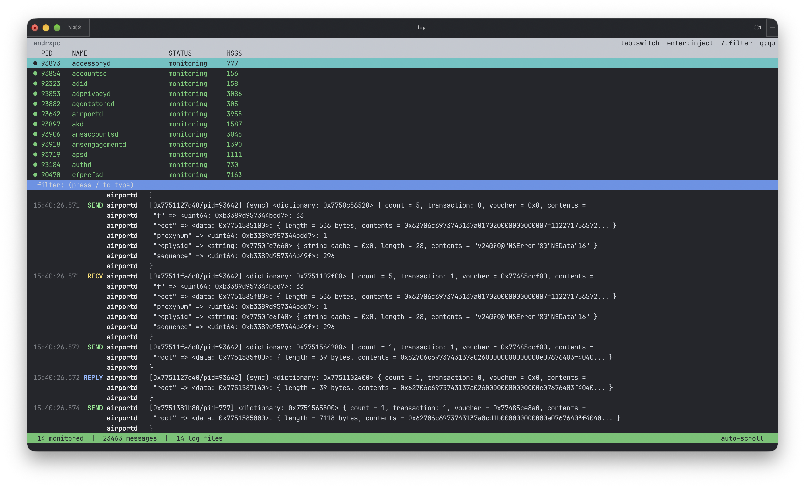

andrxpc: Intercepting Every XPC Message on macOS

Why
I was reversing some system daemons and needed to see what XPC messages they send and receive. There's no good tool for this on macOS. You can use log stream with predicates but it shows you nothing about the actual message content. Dtrace is painful. LLDB breakpoints on every xpc_connection_send_message get old fast.
So I built andrxpc. Hook into any process, intercept all IPC, dump everything to a log file.
How it works
Two main components:
- xpchook.dylib - the hook library that intercepts all IPC calls
- injector - injects the dylib into any running process via PST + remote dlopen
The hook dylib uses two techniques depending on how you inject it. If loaded via DYLD_INSERT_LIBRARIES at launch time, it uses DYLD_INTERPOSE to hook C-level XPC functions - xpc_connection_create, xpc_connection_send_message, xpc_connection_send_message_with_reply_sync, the whole set. On top of that it swizzles ObjC methods on NSXPCConnection, NSXPCListener, and NSDistributedNotificationCenter.
If injected via dlopen into an already running process, only the ObjC swizzles work because DYLD_INTERPOSE only fires at load time. Still catches all NSXPC traffic which is what most system daemons use.
The injector
This is the fun part. The injector uses processor_set_tasks to get task ports for any process on the system. PST bypasses all task_for_pid restrictions - you get a valid task port even for Apple's own system daemons.
Once you have the task port, the injector resolves dlopen in the target's address space by walking Mach-O symbol tables remotely. Then it writes a small arm64e trampoline into the target process:
static const uint32_t trampolineCode[] = {
0xD63F0100, 0xB4000074, 0xAA1403E0, 0xD63F0260,
0xB4000075, 0xAA1503E0, 0xD63F0260, 0xAA1703E0,
0xAA1803E1, 0xD63F02C0, 0xF9000320, 0xB5000060,
0xD63F0340, 0xF9000720, 0x14000000,
};The trampoline calls _pthread_set_self (so TLS works), consumes any sandbox extensions we issued, calls dlopen, stores the handle, calls dlerror if it failed, and ends with B . (spin in place). The injector polls thread_get_state until the PC hits the spin instruction, reads the result, and cleans up.
For sandboxed processes, the injector stages the dylib to /Library/Apple/usr/lib/, re-codesigns it with ad-hoc signature, and issues sandbox read + exec extensions before calling dlopen.
For launchd daemons there's another mode - launchctl debug sets DYLD_INSERT_LIBRARIES on the service, then we kill and kickstart it. This gives you full DYLD_INTERPOSE hooks on daemons, not just ObjC swizzles.
MCP server
andrxpc also comes with an MCP server so you can plug it into Claude or any other AI assistant. It exposes five tools: status, logs, log_files, inject, and processes. No dependencies, just python3.
Add this to your Claude Code config:
{
"mcpServers": {
"andrxpc": {
"command": "python3",
"args": ["/path/to/andrxpc/mcp/server.py"]
}
}
}Now you can ask Claude to read XPC traffic, inject into processes, filter logs by tag or process. Useful when you're reversing something and want to ask questions about the traffic without switching windows.
Testing
Tested on macOS 27.3 beta 1 on M4 Pro. Injected into a bunch of system daemons - accountsd, adid, airportd, apsd, adprivacyd, and others. Ran a stress test that spammed ~4000 XPC messages in a few seconds, no drops.
Requirements: Apple Silicon, SIP disabled, AMFI disabled, root.
Build & run
make
sudo build/injector -d com.apple.accountsd build/xpchook.dylib
tail -f /tmp/andrxpc/*.xpc.logThat's it. Inject and read the logs.